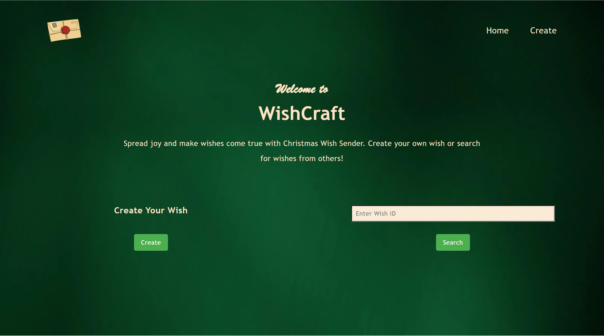
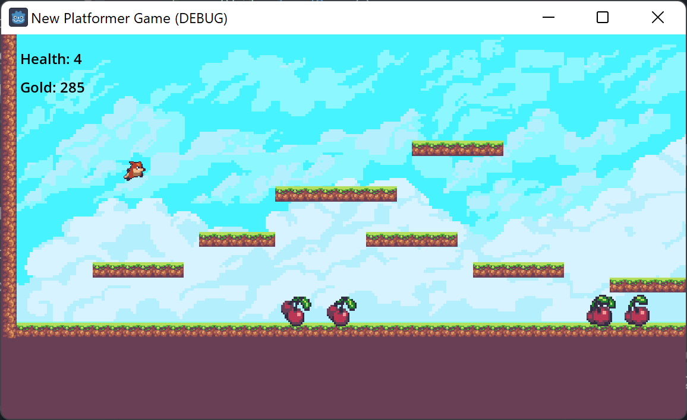

Projects
Embedded Voice Assistant
Mar 2025 – May 2025
- Engineered a standalone edge voice assistant on an ESP32 in C++, implementing non-blocking event loops and finite-state machines to manage concurrent audio processing, Wi-Fi telemetry, and peripheral control.
- Configured low-latency I2S digital audio pipelines with Direct Memory Access buffers, fine-tuning sample rates and ring-buffer thresholds to capture and playback synchronized high-fidelity audio.
- Built a local Python/FastAPI inference backend hosting a quantized open-source LLM, orchestrating an end-to-end pipeline spanning speech-to-text, context generation, and text-to-speech synthesis.
- Implemented bi-directional WebSocket streaming between the ESP32 and host server, serializing chunked raw audio frames with automated reconnection logic to achieve sub-second end-to-end voice latency.
Moodii
Apr 2024 – Aug 2024
- Developed an AI-powered Android app in Kotlin with Jetpack Compose, enabling users to log moods and track emotion trends via voice recordings.
- Designed and implemented a Spring Boot backend with 15+ RESTful APIs, enabling secure user authentication, efficient data storage, and advanced emotion trend analytics.
- Integrated a CNN+LSTM Speech Emotion Recognition model through Flask, achieving 81% accuracy.
- Orchestrated the containerization of backend and ML services using Docker, deploying to Azure with automated CI/CD pipelines to ensure rapid, reliable deployments and horizontal scalability.
Take a look at the source code on Github
DoorSense
DoorSense a smart home security system using Raspberry Pi 4B, ESP32 camera, magnetic door sensors, ML, and a mobile IOS application.
My role in this group projects includes:
- Creating a MariaDB instance on AWS server and defined the schemas and JSON data structures for efficient data management.
- Designing and implementing back-end RESTFUL API endpoints using Node.js Express framework, and connecting the endpoints to front-end using Axios
- Applying unit and integration testing to all endpoints using Postman to ensure full functionality.
Take a look at the source code on Github
WishCraft

WishCraft is a Django Webapp that allows users to encrypt and share their wishes with loved ones.
This application is made with Django and later deployed on Vercel.
It received over 500 interactions the first week after its launch!
Click to be redirected to the webapp.
Or look at the source code on Github
Aurelius
Craving for adventure? You are looking at THE right game! I made Aurelius, a simple RPG Game with Godot game Engine. Still trying to add more levels, enemies and completing the storyline... (when I have time......)
The video above is a sped-up demo.
Take a look at the source code on Github
Art Credit: Asset Pack "Ninja Adventure" by pixel-boy https://pixel-boy.itch.io/ninja-adventure-asset-pack
Godot Platformer Game (Not Public)

Hop, Hop, Dash! This is one of my ealier games, a Platformer Game made with Godot. It allows the user to kill/get hurt by enemies, collect items, jump & move around.
Inspired by YouTube Tutorial: https://www.youtube.com/watch?v=S8lMTwSRoRg&t=5s
Art Credit: Asset Pack "Sunny Land" by ansimuz https://ansimuz.itch.io/sunny-land-pixel-game-art
Other Projects
High School Projects (Not Public)
G11 ICS3U:
- Choose Your Own Adventure (Counsel Based RPG Game)
- Menu Based Sorting Algorism
- Campsite Registration GUI (with python Tkinter)
G12 ICS4U:
- File I/O (Sorting and combining data)
- Project Management
- Game of War (w/ Python Class)
Games:
- Bulls and Cows
- Pygame ChromeDino (not public)
- Math 24 Calculator (not public)
- Pop-up Virus (not public)
Tools:
- Random Generater with Python Tkinter (not public)
- Invasive plant spread Visualization Algorithm for a mathematical research